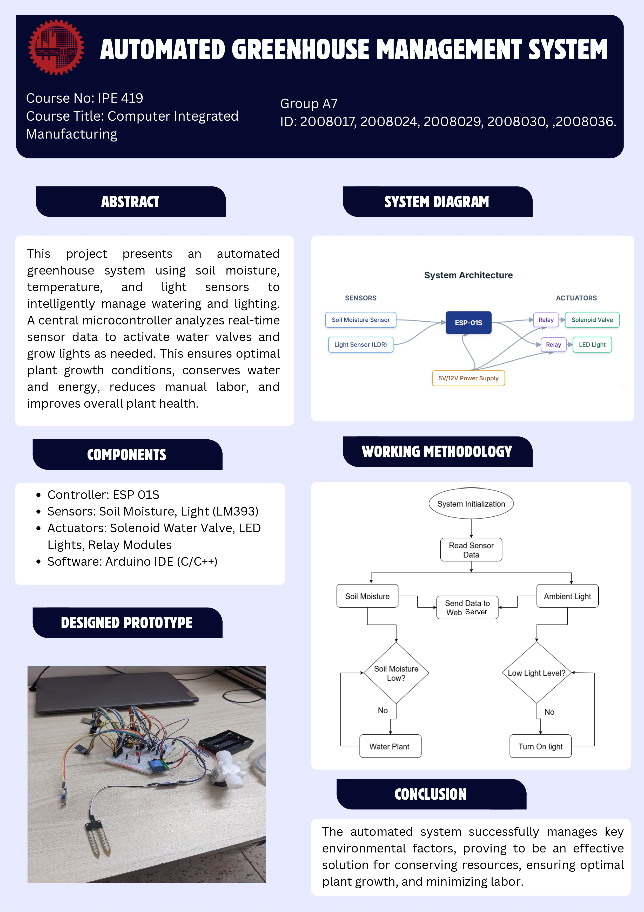

Group Leader: Md. Naimool Islam
Develop an automated greenhouse system that optimizes watering and lighting. Use sensor data to maintain ideal plant growth conditions with minimal human intervention.
| Device / Component | Quantity | Task / Function |
|---|---|---|
| Soil Moisture Sensor | 1 | Monitors soil moisture level |
| DHT11 (Temperature & Humidity Sensor) | 1 | Measures temperature and humidity |
| LM393 Light Detection Module | 1 | Detects ambient light intensity |
| Solenoid/Motorized Valve | 1 | Controls water flow for irrigation |
| LED/Grow Light with Relay | 1 | Provides artificial lighting |
| ESP8266 Wi-Fi Module | 2 | Data transmission & automation |
| Jumper Wires, Breadboard | Multiple | Electrical connections |

#include <ESP8266WiFi.h>
#include <ESP8266HTTPClient.h>
// === Pin Assignments ===
#define LIGHT_SENSOR 0 // GPIO0
#define LED_PIN 2 // GPIO2
const char* ssid = "ABCD";
const char* password = "12345678";
const char* baseUrl = "http://ipe20-buet.top/get_data.php";
WiFiClient client;
void setup() {
Serial.begin(115200);
delay(1000);
pinMode(LIGHT_SENSOR, INPUT);
pinMode(LED_PIN, OUTPUT);
connectToWiFi();
Serial.println("System Ready.");
}
void connectToWiFi() {
Serial.println("Connecting to Wi-Fi...");
WiFi.begin(ssid, password);
unsigned long startAttemptTime = millis();
while (WiFi.status() != WL_CONNECTED && millis() - startAttemptTime < 20000) {
Serial.print(".");
delay(500);
}
if (WiFi.status() == WL_CONNECTED) {
Serial.println("\nWi-Fi Connected.");
Serial.print("IP Address: ");
Serial.println(WiFi.localIP());
} else {
Serial.println("\nWi-Fi connection failed.");
}
}
void sendLightStatus(int status) {
if (WiFi.status() != WL_CONNECTED) {
connectToWiFi();
if (WiFi.status() != WL_CONNECTED) {
Serial.println("Wi-Fi unavailable. Skipping data send.");
return;
}
}
String url = String(baseUrl) + "?g=groupA7&sn=LightSensor&sd=" + String(status) + "&p=passA1&format=json";
HTTPClient http;
http.begin(client, url);
int httpCode = http.GET();
if (httpCode > 0) {
String response = http.getString();
Serial.println("Server response: " + response);
} else {
Serial.print("HTTP error: ");
Serial.println(http.errorToString(httpCode));
}
http.end();
}
void loop() {
int light = digitalRead(LIGHT_SENSOR);
if (light == HIGH) {
digitalWrite(LED_PIN, HIGH); // It's dark
Serial.println("Light: Dark → Sending 0");
sendLightStatus(0);
} else {
digitalWrite(LED_PIN, LOW); // It's bright
Serial.println("Light: Bright → Sending 1");
sendLightStatus(1);
}
delay(4000);
}
Moisture Level Control Code (ESP8266):
#include <ESP8266WiFi.h>
#include <ESP8266HTTPClient.h>
#define MOISTURE_SENSOR_PIN 2
#define RELAY_PIN 0
const char* ssid = "ABCD";
const char* password = "12345678";
const char* baseUrl = "http://ipe20-buet.top/get_data.php";
WiFiClient client;
void setup() {
Serial.begin(115200);
delay(1000);
pinMode(MOISTURE_SENSOR_PIN, INPUT);
pinMode(RELAY_PIN, OUTPUT);
digitalWrite(RELAY_PIN, LOW);
connectToWiFi();
Serial.println("System Ready.");
}
void connectToWiFi() {
Serial.println("Connecting to Wi-Fi...");
WiFi.begin(ssid, password);
unsigned long startAttemptTime = millis();
while (WiFi.status() != WL_CONNECTED && millis() - startAttemptTime < 20000) {
Serial.print(".");
delay(500);
}
if (WiFi.status() == WL_CONNECTED) {
Serial.println("\nWi-Fi Connected.");
Serial.print("IP Address: ");
Serial.println(WiFi.localIP());
} else {
Serial.println("\nWi-Fi connection failed.");
}
}
void sendMoistureStatus(int status) {
if (WiFi.status() != WL_CONNECTED) {
connectToWiFi();
if (WiFi.status() != WL_CONNECTED) {
Serial.println("Wi-Fi unavailable. Skipping data send.");
return;
}
}
String url = String(baseUrl) + "?g=groupA7&sn=MoistureSensor&sd=" + String(status) + "&p=passA1&format=json";
HTTPClient http;
http.begin(client, url);
int httpCode = http.GET();
if (httpCode > 0) {
String response = http.getString();
Serial.println("Server response: " + response);
} else {
Serial.print("HTTP error: ");
Serial.println(http.errorToString(httpCode));
}
http.end();
}
void loop() {
int moisture = digitalRead(MOISTURE_SENSOR_PIN);
if (moisture == HIGH) {
digitalWrite(RELAY_PIN, HIGH); // Soil is dry → open solenoid
Serial.println("Soil is Dry → Sending 1");
sendMoistureStatus(1);
} else {
digitalWrite(RELAY_PIN, LOW); // Soil is wet → close solenoid
Serial.println("Soil is Wet → Sending 0");
sendMoistureStatus(0);
}
delay(4000);
}